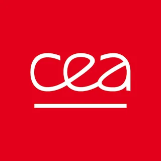
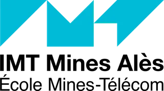

CEA Marcoule × IMT Mines Alès · 2024 – 2027
À 1 mm près. Sans jamais toucher.
SPOC positionne une sonde radiologique jusqu'à 50 kg face aux parois contaminées des installations nucléaires en démantèlement.
Exigences clés du cahier des charges
- Précision distance
- ± 1 mm
- Parallélisme
- ± 1°
- Charge utile
- ≤ 50 kg
- Autonomie
- ≥ 8 h
Exigences issues du cahier des charges CEA Marcoule. Statut de vérification détaillé sur la page Projet.
01
Le principe
Une caméra de profondeur cartographie la surface ; le calculateur positionne la sonde à la consigne, réglable de 5 mm à 30 cm ; seule l'orientation (parallélisme) est asservie en boucle fermée.
Consigne d réglable de 5 mm à 30 cm (CDC CEA, besoins 29 à 31)
SPOC, module par module
Héphaïstos · Mécanique
Déplacer 50 kg au millimètre.
Un module linéaire de 300 mm, un module de planéité à deux vérins et une rotule qui oriente la sonde de ± 5°, trois préhenseurs interchangeables. Au sol, au mur ou au plafond.
Héphaïstos · Motorisation
Pas à pas, vers la consigne.
Moteur pas à pas Nema 23, vis Igus drylin et rails inox : la sonde avance vers la paroi jusqu'à la distance demandée.
Zeus · Électronique et capteurs
Voir la paroi avant de l'approcher.
Une caméra de profondeur cartographie la surface. Une centrale inertielle et les capteurs des vérins asservissent le parallélisme à ± 1°.
Hermès · Informatique
Un signal toutes les 100 ms.
Raspberry Pi 5 pour le calcul, ESP32 pour le temps réel. Commandes en UDP, rapports en TCP : si le signal de vie manque, SPOC passe en mode dégradé.
Conception détaillée de juin 2026, en révision avant la fabrication.
14 apprentis ingénieurs.
Trois pôles, deux demi-groupes, un seul système.
Le projet en trois vues
Trois pôles techniques
Maîtrise d'ouvrage & cadre académique

